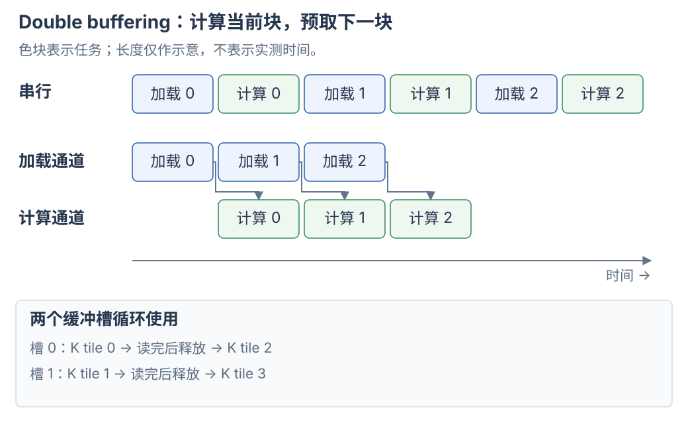

attention 怎样把两次 GEMM 与 softmax 接起来，并随 GPU 架构改变流水线，见 FlashAttention 1–4。
1. 先固定矩阵与维度的含义
GEMM 是 General Matrix Multiplication，常见接口计算 \(D=\alpha AB+\beta C\)。其中 \(\alpha\)、\(\beta\) 是标量，\(C\) 是原有输入，\(D\) 是新输出。先令 \(\alpha=1\)、\(\beta=0\)，只看 \(D=AB\)：
| 矩阵 | 逻辑形状 | 维度含义 |
|---|---|---|
| \(A\) | \([M,K]\) | M 行输入，每行 K 个参与点积的数 |
| \(B\) | \([K,N]\) | N 列，每列 K 个参与点积的数 |
| \(D\) | \([M,N]\) | M×N 个点积结果 |
M、N 决定有多少输出，K 决定每个输出要累加多少项。 因而 M/N 方向上的不同输出可以独立计算；K 方向上的不同部分最终要相加。
LLM 的 Linear 经常保存 W.shape = [N, K]，计算 X @ W.T。此时数学上的 \(B=W^T\)，不要把存储权重 W 的形状直接当成 B 的形状。后文先采用 \(A[M,K]\)、\(B[K,N]\)，到 scale 部分再显式换成 W 的约定。
来源：NVIDIA 矩阵乘法背景。
2. 一个点积为什么要分段计算
用六个元素的点积说明 K 分段：
[1, 2, 3, 4, 5, 6] · [1, 2, 3, 4, 5, 6] 第 0 段：1×1 + 2×2 = 5 第 1 段：3×3 + 4×4 = 25 第 2 段：5×5 + 6×6 = 61 最终结果：5 + 25 + 61 = 91
三段得到同一个输出的三个部分和。真实 GEMM 的 K 可能有几千，寄存器和 shared memory 容量有限，把整段输入全部留在片上通常不合适。kernel 因而加载一段、计算一段，把部分和保留在累加器里。
K 分段是一次求和的拆分，和把不同输出分给不同线程块，是两种分工。 数学上可以改变分段顺序，也可以并行求部分和再归约。浮点加法不满足严格结合律，所以不同累加顺序可能产生舍入差异。
3. 最朴素的实现：一个线程计算一个输出
概念上，为每个 (m,n) 分配一个线程：
# Python 样式的计算语义；这里的并行分工由 GPU kernel 实现。 acc = 0.0 for k in range(K): acc += A[m, k] * B[k, n] D[m, n] = acc
不同线程执行相同代码，但各自持有独立的 acc。 例如 A[2,4] @ B[4,2] → D[2,2]，用 4 个线程说明输出分工：
| 线程 | 负责的输出 | 沿 K 累加的内容 |
|---|---|---|
| thread 0 | D[0,0] |
A 第 0 行与 B 第 0 列的点积 |
| thread 1 | D[0,1] |
A 第 0 行与 B 第 1 列的点积 |
| thread 2 | D[1,0] |
A 第 1 行与 B 第 0 列的点积 |
| thread 3 | D[1,1] |
A 第 1 行与 B 第 1 列的点积 |
每个线程把 K 的全部 4 项累加到自己的寄存器，再写入自己负责的输出位置。4 个线程既不共用一个 acc，也不写同一个 D[m,n]。这个小例子只说明 SIMT 分工，不表示应当用 4 个线程配置实际 GEMM。
thread 0 和 thread 1 都读取 A 第 0 行，但更新各自的累加器。共同读取准备好的输入，与共同修改同一个输出，是两件不同的事。
问题在于复用：计算 D[m,0]、D[m,1] 的线程都需要 A 的第 m 行；计算 D[0,n]、D[1,n] 的线程都需要 B 的第 n 列。若各线程独立加载，相同数据会被反复请求。
Cache 可以吸收部分重复访问，但 kernel 仍需要组织加载指令和地址计算。还要考虑相邻线程的访问位置：row-major B 的同一列在内存中有 stride；若 warp 的相邻 lanes 改为取同一行的相邻列，就更适合合并访问。不能只看单个线程沿哪个方向走，还要看同一条访存指令中整个 warp 访问了哪些地址。
来源：CUDA Best Practices：矩阵乘法与 shared memory。
4. CTA tiling：一个 block 负责一块输出
CTA 是 Cooperative Thread Array，在这里就是 CUDA thread block。把输出 D 分成 BM×BN 的 tile；在一个基础实现中，每个 block 负责其中一块。
对于从 (m0,n0) 开始的输出 tile，每一轮 K 循环需要：
A_tile：A[m0:m0+BM, k0:k0+BK] 形状 [BM, BK] B_tile：B[k0:k0+BK, n0:n0+BN] 形状 [BK, BN] acc： 形状 [BM, BN] acc += A_tile @ B_tile
不同 K 段都更新同一块输出。其他 M/N 输出 tile 可以由别的 blocks 独立计算；这些 blocks 的启动先后顺序不由图示规定。
用 M=N=K=1024、BM=BN=128、BK=32 做一次手算：
| 对象 | 数量或形状 |
|---|---|
| 输出 tile 的行列数 | 8×8 |
| 基础实现中的 blocks 数 | 64 |
| 每个 block 的 K 循环次数 | 1024 / 32 = 32 |
| 每轮的 A_tile、B_tile | [128,32]、[32,128] |
| 每轮更新的 acc | 同一块 [128,128] |
32 次 K 循环不会把 grid 变成 64×32 个 blocks。它们发生在负责该输出 tile 的 block 内；后面的 Split-K 才会把 K 工作进一步分给不同 blocks。
下面是分工的概念代码，未处理边界：
# 不同 (m0, n0) 对应的输出 tile 可以并行计算。 acc = zeros((BM, BN), dtype=float32) for k0 in range(0, K, BK): a = load_tile(A, rows=(m0, BM), cols=(k0, BK)) b = load_tile(B, rows=(k0, BK), cols=(n0, BN)) acc += a @ b store_tile(D, acc, row=m0, col=n0)
这是常见 GEMM mainloop 的基本结构。load_tile、zeros 是示意函数，不是可直接运行的 Torch/CUDA API。Triton 官方矩阵乘法教程
4.1 CTA 内的线程怎样保存和更新累加器
acc[BM,BN] 表示整个 CTA 的逻辑输出 tile，不表示所有线程共同修改一个普通数组。 在基础 SIMT 分工中，线程分别负责不同输出；一个线程也可以持有多个输出的累加器，第 6 节会展开这种 register tiling。
对某个输出元素，假设连续四段 K 的贡献为 10、20、30、40。持有这个元素的线程持续更新同一个累加器：
初始 acc = 0 第 0 段之后：10 第 1 段之后：30 第 2 段之后：60 第 3 段之后：100 → 写回 D[m,n]
数学上，这已经是沿 K 的归约（reduction）。下一段接着更新上一段的结果，不需要额外收集其他线程对这个元素的部分和。输入搬运、缓冲区复用和异步计算仍须遵守相应同步协议。
| 存储位置 | 常见 GEMM 中保存什么 |
|---|---|
| 线程寄存器 | SIMT / mma.sync / Hopper WGMMA 路径的输出累加值，以及输入片段、地址和循环状态 |
| shared memory | CTA 协作加载的 A/B 输入 tile；输出阶段也可能用于交换、重排结果 |
| Blackwell SM100 TMEM | tcgen05.mma 路径的累加结果，详见第 7 节 |
| global memory | 原始矩阵和最终输出；Split-K 也可在这里保存跨 CTA 的部分结果 |
在寄存器累加路径中，输出 tile 分布在参与计算的线程寄存器里，通常持续保留到 K 循环结束。shared memory 暂存 A/B，不意味着每一轮都把输出部分和写回 shared memory 或显存。
Tensor Core 指令另有规定的协作方式。例如 mma.sync 由一个 warp 集体执行，矩阵 fragment 按指令布局分布在各线程寄存器中。硬件完成矩阵乘加，不能把“每线程独立计算整个点积”原样套到这个过程；也不能把它理解成 32 个线程对同一个共享地址各自执行普通 +=。
同属一个 CTA 不会自动消除写冲突。 若主动把同一输出的不同 K 段分给多个线程，就会形成多份部分和，也需要 CTA 内归约。warp 内可用 shuffle 交换并相加；跨 warp 可使用 shared memory 配合同步。__syncthreads() 让参与线程在正确的位置协调读写，但不会自动求和，也不会把并发 += 变成原子操作。
来源：CUTLASS：线程级 GEMM、累加器与 epilogue、CUDA：线程块与同步。
5. Shared memory：把重复读取变成 block 内复用
一个 K tile 中，A 的每个元素会参与 BN 个输出的计算，B 的每个元素会参与 BM 个输出的计算。block 可以协作把 A/B tile 加载到 shared memory，再让计算线程重复使用。
以 BM=BN=128、BK=32 为例，单轮需要：
A：128×32 = 4096 个元素 B：32×128 = 4096 个元素 合计：8192 个元素 完成的乘加：128×128×32 = 524288 次 FMA
若输入是 FP16，输入 tile 共 16 KiB，完成约 1,048,576 FLOPs（一次 FMA 计两次浮点运算）。只按本轮输入流量估算，算术强度是 64 FLOPs/byte。这个手算没有计输出、scale、padding、cache、跨 block 重复读取，也不代表实测 HBM 流量。
朴素的每输出独立加载模型则需要 2×BM×BN×BK 次元素读取请求；分块协作模型只需 BM×BK + BK×BN 个输入元素。这里比较的是复用机会，不是在断言真实 DRAM 流量一定按这个比例下降。
采用普通同步加载时，要保证两个边界：所有加载线程完成写入，计算线程才能读取。所有计算线程读完当前 tile，才允许覆盖这块缓冲区。 CUDA 教学代码常用两次 __syncthreads()，异步流水线则采用与传输和计算相匹配的同步协议。
6. Register tiling：一个线程计算多个输出
Shared memory 解决 block 内复用；寄存器分块进一步减少 shared memory 的重复访问。
假设一个线程负责 2×2 个输出。在某个 k 上，它先读取两个 A 值和两个 B 值：
a0 = A[m, k] b0 = B[k, n] a1 = A[m+1, k] b1 = B[k, n+1] acc00 += a0*b0 acc01 += a0*b1 acc10 += a1*b0 acc11 += a1*b1
四个输入值更新四个累加器，A/B 都得到复用。这也可以看成一个小的 outer product：[2,1] @ [1,2] → [2,2]。沿 K 重复，最终累加出一个小输出矩阵。
从逻辑上看，分块通常继续细分为 CTA tile、warp/warpgroup tile、指令 tile。SIMT FMA 路径可以显式描述每线程的几个输出；Tensor Core 路径的 fragment 则分布在参与指令的线程或专用存储中，不能把同一套“每线程一小块”的排布硬套到所有架构。
7. Tensor Core：加速片上数据的矩阵乘加
前面的数学分块和 Tensor Core 不冲突。Tensor Core 是完成小块矩阵乘加的硬件，计算含义可以写成：
一个较大的 CTA tile 会被拆成多次矩阵指令。kernel 还得负责准备数据、等待传输、组织指令和写回输出；不能因为调用了矩阵指令，就自动消除所有瓶颈。
7.1 计算路径：谁发起指令，数据放在哪里
Hopper、Blackwell 是 GPU 架构名，Tensor Core 是计算硬件，mma.sync 这些名字则是矩阵指令。这里的“路径”指 kernel 用哪类指令、怎样组织线程，以及操作数和累加结果放在哪里。
| 常见路径 | 参与计算的线程组织 | 操作数与累加结果 |
|---|---|---|
| SIMT FMA | 各线程执行普通乘加，分别计算自己的结果 | 普通寄存器保存输入值和累加结果；这一行用于和 Tensor Core 路径比较 |
mma.sync |
一个 warp 的 32 个线程共同执行矩阵指令 | 常见形式把输入和累加结果分散在参与线程的寄存器中 |
Hopper wgmma.mma_async |
一个 warpgroup 的 4 个 warps、128 个线程协作 | B 来自 shared memory；A 按指令形式来自 shared memory 或寄存器；累加结果在寄存器中 |
Blackwell SM100 tcgen05.mma |
一个线程可以发起整个异步 MMA | A 来自 shared memory 或 TMEM，B 来自 shared memory，累加结果在 TMEM 中 |
mma.sync 中的 register fragment，就是某个线程持有的矩阵片段。32 个线程按指令要求提供各自的片段，共同完成一块矩阵乘加。它们不是各自计算一次完整的矩阵乘法。tcgen05.mma 的“一个线程发起”则表示提交硬件计算任务，实际矩阵运算仍由 Tensor Core 执行。
Hopper 也可以使用 mma.sync，架构名不表示只能选择表中的一行。这里的 tcgen05 / TMEM 路线以 B200 等 SM100 GPU 为例。RTX 5090 所属的 SM120 使用不同的矩阵指令路线，不能仅凭“Blackwell”这个名字就照搬。
数据类型、指令形状、转置形式和对齐条件由硬件及指令决定。不存在一条适用于所有 GPU、所有精度的“矩阵边长是某个倍数就一定最快”规则。
来源：PTX 矩阵指令、CUTLASS Blackwell SM100 GEMM。
7.2 TMEM：为 Tensor Core 增加专门的片上存储
Tensor Memory（TMEM）是 SM100 上额外的一块片上存储，独立于普通寄存器和 shared memory。 TMEM 主要保存 Tensor Core 的矩阵累加结果。理解它时，先看“中间结果存在哪里”：
Hopper WGMMA： Tensor Core 更新计算线程寄存器中的累加结果 Blackwell SM100： Tensor Core 直接更新 TMEM 中的累加结果
分块 GEMM 沿 K 依次读取输入块，输出的中间结果却要一直保留：
第 0 段 K：D = A₀ @ B₀ 第 1 段 K：D = D + A₁ @ B₁ 第 2 段 K：D = D + A₂ @ B₂ ……
这里不断更新的 D 就是累加器矩阵。假设 D 的逻辑形状为 [128,128]，使用 FP32 累加，仅这些数值就占 128×128×4 = 64 KiB。若平均分给 128 个线程，每个线程要保存 128 个 FP32 值；这还没有计入地址、循环变量和其他临时值。这个手算说明寄存器压力的来源，实际分配还取决于指令和布局。
TMEM 让这批长期存活的累加结果占用专门的存储，普通寄存器可以用于其他工作。 需要后处理时，线程再读取结果。TMEM 的收益来自存储和执行方式的改变，不能仅凭“多了一块存储”推断具体加速比例。
7.3 从输入搬运到 TMEM 累加，再到输出
采用 A、B 都来自 shared memory 的形式时，一条典型数据流是：
global memory 中的 A、B
↓ TMA 等搬运机制
shared memory 中的当前输入块
↓ tcgen05.mma 使用输入块
Tensor Core 读取并更新 TMEM 中的 D
↓ 更换输入块，沿 K 继续累加，D 留在 TMEM 中
等待所需的 MMA 完成
↓ tcgen05.ld：TMEM → 普通线程寄存器，并等待读取完成
线程执行 bias、激活或类型转换
↓
最终输出写回 global memory
主循环中的 D 可以一直留在 TMEM 中；每次 MMA 不必先把整个累加器交给普通线程寄存器。普通算术指令需要处理结果时，仍然会用到寄存器，所以 TMEM 不会消除 kernel 的全部寄存器需求。
三个名称分别承担不同职责：TMA 负责搬运数据，Tensor Core 负责矩阵运算，TMEM 负责保存 Tensor Core 使用的数据。 TMA descriptor 则是描述搬运对象的元数据，不是保存矩阵数值的 TMEM。
7.4 TMEM 的分配、同步与复用
TMEM 需要 kernel 显式管理，不是硬件自动填充的 cache，也不是通过 cudaMalloc() 分配的 global memory。kernel 通过专门指令申请空间，使用 TMEM 地址访问，结束前释放申请的空间。
申请 TMEM
→ 发起 MMA 并累加
→ 等待计算完成
→ 读取并处理结果
→ 确认使用者已完成访问
→ 复用这块空间，或在退出前释放
tcgen05.mma 可以由单线程发起，但 tcgen05.alloc / tcgen05.dealloc 要求一个 warp 协作执行。各类指令的参与要求不同。SM100 的 TMEM 按列分配，基本粒度为 32 列，分配列数要求为 2 的幂。
MMA 是异步操作。tcgen05.commit 可以让 barrier 跟踪此前 MMA 的完成，消费者等待对应完成信号，并满足访问顺序要求后，才能读取结果。仅执行一次普通 __syncthreads() 或 fence，不能替代 MMA 完成等待。
kernel 还可以在 TMEM 中安排两个累加器区域：Tensor Core 计算下一块输出时，后处理线程读取上一块结果。这为计算和后处理重叠提供条件，但需要更多 TMEM 容量，以及正确的缓冲区读写依赖。
8. 内存布局：合并访问、bank conflict 与 swizzle
8.1 Global memory：看一个 warp 的地址集合
对于 row-major FP32 矩阵，相邻 32 个线程分别读取相邻元素，覆盖连续的 128 字节；实际事务还受对齐、边界和硬件规则影响。若它们读同一列但跨不同行，地址间距是整行字节数，通常需要更多内存事务。
优化目标是把计算线程需要的逻辑元素，映射到适合加载的物理地址。可以通过线程映射、向量化加载或预先转换布局达到目的，不能只靠交换矩阵名称。
8.2 Shared memory：bank 是什么，冲突怎样产生
Bank 是可以与其他 bank 并行访问的存储分区，包含存储单元和相应的读写电路。 一个 warp 有 32 个线程，执行同一条读取指令时，可能提供 32 个不同地址。把 shared memory 分成多个 bank，可以让这些请求分散到不同分区并行服务。
现代 NVIDIA GPU 的 shared memory 通常有 32 个 bank。以下采用每线程读取一个 FP32 元素的模型：每个元素占 4 字节，连续的 32 位字依次映射到连续的 bank。假设数组 x 的起始地址对应 bank 0：
| Bank 0 | Bank 1 | Bank 2 | … | Bank 31 |
|---|---|---|---|---|
x[0] |
x[1] |
x[2] |
… | x[31] |
x[32] |
x[33] |
x[34] |
… | x[63] |
x[64] |
x[65] |
x[66] |
… | x[95] |
| … | … | … | … | … |
一个 bank 可以保存许多元素，4 字节描述的是这里的映射粒度，不是整个 bank 的容量。Bank 也不属于某个固定线程：线程访问哪个 bank，由它提供的地址决定。
对上述数组，公式简化为 bank(x[i]) = i % 32。
8.2.1 不同 bank、同 bank、同地址
令 lane 为 warp 内的线程编号，取值为 0 到 31。以下三种读取的结果不同：
| 每个线程读取 | 32 个线程的地址分布 | 硬件服务方式 |
|---|---|---|
x[lane] |
x[0] 到 x[31]，分别落在 32 个 bank |
并行服务，没有 bank conflict |
x[lane * 32] |
x[0]、x[32]、…、x[992]，不同地址全落在 bank 0 |
分批服务，形成 32-way bank conflict |
x[0] |
所有线程读取完全相同的地址 | 读取同一份数据并广播，不构成上述冲突 |
Bank conflict 的典型情形，是同一 warp 的一次访问中，多个不同的 32 位字争用同一个 bank。 硬件把请求拆成多次无冲突的服务，降低有效带宽。普通的不同地址读取仍然得到正确结果；这是性能问题，不是数据竞争。多个线程写同一地址则另有正确性要求，不能套用读取广播的解释。
这里的“32-way”描述这次访问的冲突程度，不代表整个 kernel 必然慢 32 倍。向量化访存本身也可能需要多个服务批次，不能把所有批次都算成额外冲突；FP16、宽访存和 Tensor Core 数据加载需要结合具体指令分析。
来源：CUDA：Shared Memory and Memory Banks、Nsight Compute：Shared Memory 请求与 bank conflicts。
8.2.2 读矩阵的一行与一列：padding 为什么有效
对于行优先 FP32 数组 tile[32][32]，假设起点对应 bank 0：
因此，32 个线程读取 tile[0][lane] 时，列号不同，分散到 32 个 bank。读取 tile[lane][0] 时，列号全是 0，全部争用 bank 0。
把存储改成 tile[32][33]，每行最后一个位置作为 padding，逻辑数据仍只使用前 32 列：
同一列的访问就变为：
tile[0][0] → bank 0 tile[1][0] → bank 1 tile[2][0] → bank 2 … tile[31][0] → bank 31
矩阵数值和逻辑坐标没有改变，改变的是行与行之间的地址跨度。代价是多用 32 个 FP32 位置，即 128 字节 shared memory。这个 padding 方法针对上述访问模式，不是所有 dtype 和矩阵指令的通用布局。
8.2.3 Swizzle：按规则重排存放位置
Swizzle 通过重排地址位，让需要一起访问的数据分散到合适的 bank。用一个简化的 4×4 示例说明：把逻辑元素 (r,c) 存到该行的物理列 c XOR r，行内元素顺序变成：
物理列： 0 1 2 3 第0行： a00 a01 a02 a03 第1行： a11 a10 a13 a12 第2行： a22 a23 a20 a21 第3行： a33 a32 a31 a30
逻辑第 0 列的 a00、a10、a20、a30，分别位于物理列 0、1、2、3。示例只说明重排方法，不代表 NVIDIA TMA 的实际 swizzle 粒度或 Tensor Core 的布局要求。
逻辑上的 tile[m,k] 不变，元素在 shared memory 中的物理位置可以改变。 写入者和消费者必须使用同一套映射，否则会读错元素。TMA 可以在搬入 shared memory 时执行支持的 swizzle，但消费者仍须按对应布局取数，并满足对齐和指令约束。
Bank conflict 值得关注，不仅因为 shared memory 延迟低，还因为它承担了 tile 的反复读取。冲突会破坏 bank 间的并行服务能力，并在计算循环中重复发生；数据供应可能因此限制 Tensor Core 的利用率。是否构成当前 kernel 的瓶颈，仍需结合测量判断。
来源：CUDA：Shared-memory 矩阵布局与 padding、TMA：Shared-Memory Bank Swizzling。
8.3 逻辑转置不一定搬动数据
PyTorch 的 transpose/permute 通常只改变 shape 和 stride。若目标是让原本分散的元素在物理内存中连续，往往需要实际重排，或直接让上游 kernel 按目标布局写出。仅修改视图、descriptor 或指针解释，不会消除底层地址之间的间隔。
8.4 显存也有 bank，为什么 kernel 优化中较少直接讨论
HBM/GDDR 显存属于 DRAM，也有 bank 争用和 row-buffer conflict：同一 bank 切换到另一行时，可能需要先关闭当前行，再激活目标行。CUDA 语境中不加限定地说“bank conflict”，通常指 shared memory 的冲突，并不表示显存没有类似问题。
普通 global load 要经过多层硬件：
warp 的地址 → 合并访问与缓存查询
↓ 缓存未能满足请求
内存控制器排队、调度
↓
显存 channel / bank / row
到达 DRAM 的请求来自多个 warp 和 SM；控制器还会重排请求，利用行命中和 bank 并行性。具体地址映射依赖硬件，不能直接套用 shared memory 的 (address / 4) % 32。因此，kernel 开发通常先优化容易控制和测量的合并访问、缓存复用、传输量与显存带宽；shared memory 的冲突则可以直接关联到访存指令，并通过 padding 或 swizzle 调整。
较少直接讨论 DRAM bank conflict，不代表它的开销可以忽略。 合并访问良好也不保证没有 DRAM bank 冲突：前者组织当前 warp 的传输请求，后者涉及这些请求与其他请求在显存中的调度。
来源：CUDA：Global memory 合并访问、NVIDIA：GPU DRAM bank conflicts 与控制器调度。
9. 双缓冲与多级流水线：搬下一块，同时算当前块
基础循环是“加载 → 等待 → 计算 → 再加载”。如果传输和计算完全串行，计算单元会在访存期间空等。
双缓冲分配两个输入缓冲槽。计算 K tile 0 时，把 K tile 1 搬到另一槽；用完 tile 0 后，再让 tile 2 复用它的槽。

图中时间长度仅用于说明依赖，不表示某台 GPU 的实测耗时。ready 表示加载完成；released 表示计算已不再读取该槽。异步矩阵指令发出后，输入未必已经读完，所以不能只以“指令已发出”作为释放缓冲区的依据。
阅读 stage 相关讨论时，需要区分三个概念：
| 名称 | 表达什么 | 示例 |
|---|---|---|
| K tile / mainloop iteration | 当前处理哪一段 K | 第 i 轮处理 [i×BK,(i+1)×BK) |
| Pipeline stage / buffer slot | 同时在途的数据占用哪个缓冲槽 | 两槽实现中常见 slot = i % 2 |
| Quantization group | 哪些数据共享一个 scale | 一行的 128 个元素共用 scale |
三者可以对齐，也可以不一样。例如 K=1024、BK=64 有 16 次 K 循环。num_stages=3 表示流水线配置有 3 个数据缓冲阶段，不会把循环变成 3 次。量化组长 128 时，两个 K tile 可能使用同一组 scale。
一个粗略的稳态模型：串行每轮约 Tload + Tcompute；充分重叠时接近 max(Tload, Tcompute)，还要加启动、排空和同步成本。若带宽不足、计算太短或资源不足，就达不到理想重叠。更多 stages 会占更多 shared memory，也可能降低驻留并发。
10. cp.async、TMA 与 warp specialization
10.1 异步搬运解决什么
cp.async 路径让线程发起 global→shared 的异步拷贝，在支持的形式下避免数据先经过普通寄存器再写入 shared memory。线程仍需组织地址、发起和等待传输。
Hopper 引入的 TMA 支持硬件辅助的多维 tile 搬运。Tiled TMA 使用 descriptor 描述 base address、shape、stride、tile 等信息，请求再提供坐标、shared-memory 目标位置和完成同步对象。它把许多逐元素寻址和搬运工作交给硬件，不会替 kernel 选择 GEMM tile 或自动完成矩阵乘法。
TMA multicast 在支持的 thread block cluster 内可以把数据分发到多个 blocks 的 shared memory，减少部分重复加载；这也需要消费者具有相应的数据复用关系。Cluster 是同一 GPU 上的 block 分组，不是 EP 的跨 GPU 通信组。
来源：Hopper TMA 与异步传输、Tensor Map 接口。
10.2 Warp specialization 怎样分工
同一个 block 中，可以让一部分 warps 专门组织加载，让另一些 warps 组织矩阵计算：
Producer warps：等待空槽 → 发起加载 → 通知数据就绪 Consumer warps：等待数据 → 执行矩阵计算 → 通知槽可以复用
两个角色处理不同 K tiles，就能形成流水线。Producer 不是一直亲手复制每个字节；使用 TMA 时，它可以主要负责发出传输请求和维护同步。
这种分工会消耗线程、寄存器、缓冲槽及同步状态；若任务太小，组织成本可能不划算。Warp specialization 描述角色分工，double buffering 描述缓冲配置，TMA 描述搬运机制，它们可以组合使用，也各有独立含义。
来源：CUTLASS 3.x 的 collective mainloop 与调度。
11. Tile 大小、资源消耗和边界浪费
一个 block 负责的输出 tile 越大，通常越能复用输入；但它也需要保存更多状态，而且整个矩阵会被分成更少的任务。 分析 tile 时，需要分别计算数据复用、片上资源、任务数量和边界空洞。
以下沿用 \(D=AB\) 的记号，先讨论一个 CTA 负责一个输出 tile 的基本方案，不含 Split-K、persistent 调度或跨 CTA 协作。数值示例是按明确假设手算的结果，不是性能实测。
11.1 更大的输出 tile 有哪些收益和代价
BM、BN 决定输出范围，BK 决定每轮累加多少项
BM：这个 block 计算 D 的多少行 BN：这个 block 计算 D 的多少列 BK：每轮处理多长的一段 K
例如 BM=BN=128、BK=32：
每轮加载 A tile：[128, 32] 每轮加载 B tile：[32, 128] 乘加更新 D tile：[128, 128] 第 0 轮：处理 K[ 0:32]，更新同一块 D 第 1 轮：处理 K[32:64]，更新同一块 D 第 2 轮：处理 K[64:96]，更新同一块 D ……
D 的这块累加结果需要跨 K 循环保存，A/B 的输入块则不断换新。 这里是 CTA 级 tile，内部通常还会拆成 warp tile 和 MMA 指令 tile；一条 Tensor Core 指令不一定能处理整个 128×128×32。
大输出 tile 怎样增加输入复用
对于当前 K 段，一个输出需要累加：
固定一个 A[i,k]，它能与 B 当前块中的 BN 个元素相乘：
A[i,k] × B[k,0] → 更新 D[i,0] A[i,k] × B[k,1] → 更新 D[i,1] …… A[i,k] × B[k,BN-1] → 更新 D[i,BN-1]
同一个 A 元素用于 BN 个输出，同一个 B 元素用于 BM 个输出。因此，增大 BN 能增加 A 的复用，增大 BM 能增加 B 的复用。
固定 BK=32，A/B 都使用 FP16，每元素 2 字节：
| 每轮的计算与输入 | 64×64×32 |
128×128×32 |
|---|---|---|
| A 元素数 | 64×32 = 2048 |
128×32 = 4096 |
| B 元素数 | 32×64 = 2048 |
32×128 = 4096 |
| A+B 输入字节数 | 8 KiB | 16 KiB |
| FLOPs，乘加算 2 次 | 262,144 | 1,048,576 |
| FLOPs / 输入字节 | 32 FLOP/byte | 64 FLOP/byte |
BM、BN 同时翻倍，输入数据量变成 2 倍，计算量变成 4 倍。 搬进来的每份数据支持了更多计算。
这个模型假设每轮的 A/B tile 各加载一次，忽略输出写回、padding 和辅助数据。跨 CTA 的 L2 复用还会改变实际 HBM 流量，不能把表中的比例直接当成实测 HBM 算术强度。
资源账一：shared memory 中的输入缓冲
设 A/B 每元素占 \(s\) 字节，输入缓冲有 \(P\) 个槽，不计额外布局开销：
对于 128×128×32、FP16，单槽需要：
双缓冲中，一个槽供当前计算使用，另一个槽接收下一轮输入，因此需要 32 KiB；三槽需要 48 KiB。实际还可能需要 padding、barrier、scale 和 epilogue 缓冲。
资源账二：输出累加器
如果使用 FP32 累加，每个输出需要保存一个 4 字节的累加值：
| 输出 tile | 输出元素数 | FP32 累加结果的逻辑存储量 |
|---|---|---|
64×64 |
4096 | 16 KiB |
128×128 |
16384 | 64 KiB |
输出面积变成 4 倍，累加结果的存储量也变成 4 倍。寄存器累加路径把这些值分布到参与计算的线程寄存器中。假设两种实现都由 256 个线程均匀保存累加值：
64×64： 4096 / 256 = 每线程 16 个 FP32 累加值 128×128：16384 / 256 = 每线程 64 个 FP32 累加值
这些还只是累加器，线程还需要保存地址、输入 fragments 和循环状态。实际寄存器分配还受编译器及分配粒度影响。一个 128×128 输出 tile 不要求 16384 个线程；较少的线程可以各自维护多个输出，代价是每线程需要更多寄存器。
Blackwell TMEM 累加路径需要另算专用存储，不能把上述累加结果全部计入普通寄存器。
每个 block 资源变多，会限制 SM 的驻留数量
假设某个 SM 可供这些 blocks 使用的 shared memory 是 96 KiB。这只是说明资源约束的预算示例，不对应某个型号的固定规格：
每个 block 使用 16 KiB → 仅看 shared memory，最多容纳 6 个 block 每个 block 使用 32 KiB → 仅看 shared memory，最多容纳 3 个 block
实际还要检查寄存器、线程数和 block 数上限。任何一项资源先用完，都可能限制驻留数量。增加缓冲槽数也会影响这个上限。
驻留多个 blocks 的作用之一是隐藏等待：
block A 的 warp：正在等待数据 block B 的 warp：有已经就绪的计算 block C 的 warp：有已经就绪的访存
SM 可以从其他就绪 warps 发出指令。如果资源只允许少数 warps 驻留，它们同时等待时，就可能没有其他工作填补空闲。
Occupancy 是驻留活跃 warps 相对硬件上限的比例，不是 Tensor Core 使用率。低 occupancy 也可能获得高性能：大 tile 可以减少访存，并在 block 内提供独立计算和多级流水线。最终要看执行单元是否持续获得有效工作，不能单独追求 occupancy 最大。
整个问题也必须提供足够多的 blocks
即使单个 block 资源允许，还要有足够多的任务可调度。对 M=N=1024：
128×128 输出 tile → 8×8 = 64 个 block 64×64 输出 tile → 16×16 = 256 个 block
如果 GPU 有 120 个 SM，基本方案下的 64 个 blocks 连每个 SM 分一个都做不到。大 tile 的局部复用可能更好，但整个 GPU 仍有 SM 没有工作。
这两种限制要分别判断：一个 SM 能驻留多少 block，取决于单个 block 的资源消耗；整个 GPU 有多少 block 可分，取决于问题规模和 tile 划分。
BK 增大不会按同样方式提高输入复用
固定 BM=BN=128，把 BK 从 32 增大到 64：
BK=32：每轮更新 128×128 个输出，每个输出累加 32 项 BK=64：每轮仍更新 128×128 个输出，每个输出累加 64 项
A/B 输入缓冲和每轮计算量都翻倍，输出累加器数量不变。如果总 K=4096，主循环从 128 轮减少到 64 轮。
但每轮的 FLOPs / 输入字节为：
BK 在这个简单模型中被约掉了。 BK 增大可能减少循环、同步和传输请求的组织开销，也会增加缓冲需求、改变流水线粒度。不能仅凭 BK 变大就认定算术强度提高。
来源：CUTLASS GEMM 层级与线程块分工、寄存器压力与软件流水线。
11.2 Tile quantization：边界不满一块
设 M=N=130、BM=BN=128。每个维度都需要向上取整，因此输出需要 2×2 个 tiles。每块的有效输出范围是：
| 输出 tile | 有效行数 | 有效列数 | 有效输出数 |
|---|---|---|---|
| 左上角 | 128 | 128 | 16384 |
| 右上角 | 128 | 2 | 256 |
| 左下角 | 2 | 128 | 256 |
| 右下角 | 2 | 2 | 4 |
输出坐标范围（左闭右开）：
列 [0,128) 列 [128,130)
行 [0,128) 有效 128×128 有效 128×2
行 [128,130) 有效 2×128 有效 2×2
每个位置都对应一个按 128×128 输出范围组织的 tile。
右下角只有 4 个有效输出，但常规固定 tile 路线仍可能为它分配完整的累加器、输入缓冲，并执行包含无效位置的矩阵指令。
Mask/predication 首先保证正确性：不读取越界地址，必要时把无效输入填零，并且不写出越界结果。避免越界访问，不等于消除全部无效计算和资源占用。 固定形状的 MMA 可能仍然执行涉及零值的运算；寄存器和 shared memory 分配通常也不会因为某个边界 block 的有效范围小就自动缩小。专用边界 kernel 可以采用不同处理方式。
按完整 tile 的覆盖面积计算有效比例：
对于 130×130：
| 输出 tile | tile 数量 | 覆盖面积 | 有效面积比例 |
|---|---|---|---|
128×128 |
2×2 = 4 |
256×256 |
25.8% |
64×64 |
3×3 = 9 |
192×192 |
45.8% |
32×32 |
5×5 = 25 |
160×160 |
66.0% |
小 tile 减少了边界空洞，却也削弱了输入复用。表中只是面积比例，不是 Tensor Core 利用率，更不表示性能按同样比例变化。K 不能被 BK 整除时，最后一轮也可能出现尾部填充；它不包含在上述 M/N 面积比例中。
这里的 quantization 指工作范围只能按整块取整，与 FP8/INT8 的数值量化不同。
11.3 Wave quantization：最后一批工作填不满 GPU
即使每个 tile 都完全有效，GPU 仍可能因为最后剩下的任务太少而空闲。
假设设备有 120 个 SM，资源约束使每个 SM 一次只能驻留一个这样的 CTA，并且每个 CTA 的执行时间近似相同，记作 T：
120 个 block： 一批处理完，近似耗时 T。 121 个 block： 先处理 120 个，再处理剩下的 1 个，近似耗时 2T。 最后一个 block 执行时，其余 119 个 SM 没有这个 kernel 的工作。
Wave 描述按并发容量划分的一批工作。实际 blocks 会异步完成，SM 也可能驻留多个 blocks；GPU 不要求所有 blocks 全局锁步进入下一轮。
在上面的等时长模型中，设任务数为 \(G\)，并发容量为 \(W=120\)，容量填充比例为：
| block 数量 G | 近似批数 | 容量填充比例 |
|---|---|---|
| 120 | 1 | 100% |
| 121 | 2 | 50.4% |
| 240 | 2 | 100% |
| 241 | 3 | 66.9% |
这说明任务数刚超过并发容量的整数倍时，延迟可能出现台阶。容量填充比例不是实测执行单元利用率；实际时间还受 block 时长差异、资源竞争和调度影响。
Tile 大小同时影响任务数量和每个任务的资源需求，因此也可能改变 W。比较两个 tile 配置时，不能只比较 block 数量，却假定它们的驻留能力和单 block 耗时相同。
11.4 比较 tile 配置时分别计算什么
| 要检查的事 | 基本计算或判断 |
|---|---|
| 每次加载支持多少计算 | 2×BM×BN×BK / 输入字节数，明确所计的存储层级 |
| 每个 block 占多少片上资源 | 输入缓冲乘槽数；另算累加器及其他状态，分别检查各类资源 |
| 整个问题有多少块工作 | 基本方案下为 ceil(M/BM) × ceil(N/BN) |
| 边界是否浪费 | 有效输出面积占完整 tiles 覆盖面积的比例 |
| 最后一批是否有足够工作 | 结合该 kernel 的并发容量，检查任务数的余数 |
这些计算用于解释候选限制，不能代替目标 GPU 上的性能测量。大 tile 可能在复用上获益，却在资源占用、任务数量或边界上付出代价；选择时需要同时检查这些因素。
12. L2 locality：改变输出 tile 的访问顺序
计算 D[m_tile,n_tile] 时，同一个 m_tile 的不同输出列块复用 A；同一个 n_tile 的不同输出行块复用 B。如果近期工作的 tiles 共享某一输入区域，L2 有机会保留这些数据。
因此可以改变 tile ID 到 (m_tile,n_tile) 的映射，让相邻工作形成小组，而不是总按一行输出从左扫到右。这样优化的是跨 CTA 的 cache 复用，不会改变矩阵的逻辑形状。
这里的 threadblock swizzle / tile rasterization 与 shared-memory swizzle 不同：前者调整工作坐标的访问次序，后者调整数据在 shared memory 中的位置。输出 tile 编号也不保证严格的硬件执行顺序；优化利用的是调度局部性和 cache 机会。
来源：Triton 的 grouped tile ordering。
13. Split-K：输出 tiles 太少时，把求和也并行化
13.1 多个 CTA 计算同一输出的不同贡献
假设 M=N=128、K=8192，采用 128×128 输出 tile。基础分工只生成一个 CTA，即使 K 很长，也很难利用整个 GPU。
这个 CTA 内的线程可以分担输出元素，但整个 CTA 仍运行在一个 SM 上。延长 K 循环，不会自动让其他 SM 加入计算。
Split-K 把 K 分给 P 个 CTA。例如 P=4：
CTA 0：A[:, 0:2048] @ B[ 0:2048, :] → D0 CTA 1：A[:, 2048:4096] @ B[2048:4096, :] → D1 CTA 2：A[:, 4096:6144] @ B[4096:6144, :] → D2 CTA 3：A[:, 6144:8192] @ B[6144:8192, :] → D3 最终 D = D0 + D1 + D2 + D3
每个 CTA 都在计算 [128,2048] @ [2048,128]，所以 D0 到 D3 都是 [128,128]。四个 CTA 负责同一片输出坐标的不同 K 段，不是分别负责输出矩阵的四个角。
13.2 原来的累加也是归约，Split-K 新增跨 CTA 合并
沿用第 4.1 节的一个输出元素。单 CTA 可以持续把 10、20、30、40 加到同一个累加器；Split-K 则得到四份独立结果：
CTA 0 的局部累加器：10 CTA 1 的局部累加器：20 CTA 2 的局部累加器：30 CTA 3 的局部累加器：40 每个 CTA 都算完自己的 K 段，仍需合并：10 + 20 + 30 + 40 = 100
“额外归约”指新增的结果合并阶段。普通 CTA 不能直接读取另一 CTA 的线程寄存器。普通 shared memory 也以 CTA 为作用域；即使两个 CTA 驻留在同一个 SM 上，也不会自动共享这块存储。显式使用 cluster distributed shared memory 时另有访问和同步要求，不能把它当作任意 CTA 之间的普通共享数组。
| 跨 CTA 的困难 | 实现必须保证什么 |
|---|---|
| 部分结果分散在不同 CTA 中 | 把结果写到合并方可以访问的位置 |
| 各 CTA 完成时间不同 | 读取部分结果之前，写入已完成且对读取方可见 |
| 多个部分结果对应同一输出元素 | 合并时保留每一份贡献，避免覆盖或丢失更新 |
13.3 普通 += 为什么会丢失结果
假设两个 CTA 对同一个 global memory 地址执行 D[m,n] += partial。普通读、加、写可能交错成：
D[m,n] 初始为 0 CTA 0 读取 0，准备加 10 CTA 1 也读取 0，准备加 20 CTA 0 写回 10 CTA 1 写回 20 最终得到 20，正确结果应为 30：CTA 0 的贡献丢失了。
__syncthreads() 只协调当前 CTA 的线程，不能等待整个 grid 的其他 CTA。普通 CTA 的执行顺序也没有保证，并且不一定同时驻留；不能随意插入“所有 CTA 自旋等待彼此”的全局 barrier。
13.4 Workspace 与归约 kernel 怎样完成合并
一种实现先让各 CTA 写不同的临时区域，再由另一个 kernel 合并：
阶段一：Split-K GEMM kernel
CTA 0 → workspace[0, :, :] = D0
CTA 1 → workspace[1, :, :] = D1
CTA 2 → workspace[2, :, :] = D2
CTA 3 → workspace[3, :, :] = D3
阶段二：reduction kernel
对每个 (m,n)：
D[m,n] = workspace[0,m,n] + workspace[1,m,n]
+ workspace[2,m,n] + workspace[3,m,n]
workspace 位于 global memory，各 CTA 写入互不重叠的位置。把两个 kernel 按顺序提交到同一个 CUDA stream，可以保证归约 kernel 在前一 kernel 完成后读取结果，无需 CPU 把部分结果读回。归约 kernel 内也可让不同线程负责不同 (m,n)，各自合并 P 份贡献。
在满足类型支持、初始化和完成同步要求时，也可以使用原子累加或其他跨 CTA 协议。原子加能防止同一地址丢失更新，但不代表所有 CTA 已完成，也不保证浮点加法的执行顺序固定。
更多并行度的代价是部分结果的写入/读取、归约、同步和潜在的数值差异。4 个 CTAs 也未必足够填满设备。若 M/N 本来已经很大，增加 Split-K 可能只增加额外工作。
βC 和非线性 epilogue 必须注意执行位置：基础实现可在部分和正确合并后只应用一次。每个 CTA 都加完整的 βC，会重复加 P 次。非线性操作也不能随意提前：ReLU(1)+ReLU(-1)=1，但 ReLU(1-1)=0。
来源：CUTLASS 并行归约与 Split-K、CUDA：线程块与同步。
14. Persistent GEMM、Stream-K 与负载均衡
14.1 Persistent：一个 CTA 连续计算多个 tiles
基础分工给每个输出 tile 一个 CTA。Persistent kernel 则启动一批 CTAs，每个 CTA 算完当前任务，再取下一块：
# 概念代码：next_work 可以是静态步进，也可以由动态调度器提供。 while (work := scheduler.next_work()) is not None: acc = compute_one_output_tile(work) write_epilogue(work, acc)
可复用执行组织，灵活安排 tile 顺序和不同问题。Persistent 不意味着“模型权重一直放在 shared memory”，也不意味着“一次 launch 的 CPU 开销消失”。普通 GEMM 本来也可以一次 launch 完成；这里改变的是 CTA 与工作任务的映射。
14.2 Stream-K：按 K 迭代工作量分配任务
若输出 tiles 的数量与执行容量不匹配，仅按整块输出分配容易留下长尾。Stream-K 把“某输出 tile 的某段 K 迭代”看成可分配工作，让执行者承担更接近的计算量。
一个输出 tile 可能被不同执行者共同完成，因此边界处需要合并部分结果。它与把所有 tiles 都按固定份数拆开的 Split-K 有不同的工作划分方式，也不能理解为“使用多个 CUDA streams”。具体实现会在均衡收益与部分和通信之间做取舍。
来源：Stream-K 原论文。Persistent/grouped 工作分配的实现例见 CUTLASS grouped scheduler。
14.3 Blackwell 的 CLC 放在哪里
Cluster Launch Control（CLC）提供硬件辅助的工作获取机制，可以用于动态 tile 调度。它优化的是任务分配环节，不替代 TMA 搬运、矩阵指令或部分和归约；支持 CLC 也不表示任意 GEMM 都一定从动态调度获益。
来源：CUTLASS CLC 调度说明。
15. Batched / grouped GEMM：把多个矩阵问题放在一起
| 方式 | 问题形态 | 要解决什么 |
|---|---|---|
| Strided batched GEMM | 多个同尺寸问题，批次地址间隔规则 | 高效描述重复的矩阵乘法 |
| Pointer-array batched GEMM | 常见形式仍是同尺寸问题，但各矩阵由指针给出 | 允许各问题地址不规则 |
| Grouped GEMM | 一组 GEMM，可以支持不同问题尺寸；具体库有约束 | 合并任务、减少多次小 launch，并均衡工作 |
MoE 的一个线性投影常见：
Expert 0：X0[ 37,K] @ W0[N,K].T → Y0[ 37,N] Expert 1：X1[112,K] @ W1[N,K].T → Y1[112,N] Expert 2：X2[ 9,K] @ W2[N,K].T → Y2[ 9,N]
各 expert 的权重 N/K 相同，token 数 M 不同。Grouped kernel 把所有 expert 的输出 tiles 放进一套任务分配中。它不会把每个 token 都和所有 expert 权重相乘；tile 必须携带正确的 expert 归属。
DeepGEMM 的 M-grouped 接口要求 N/K 固定，并对输入 token 的分组布局和对齐做约束。若本 GPU 的权重规则打包成 [E_local,N_local,K_local]，一个权重 TMA descriptor 可以覆盖这些本地权重，通过坐标选择 expert。EP/TP 后通常是各 GPU 各自描述本地权重或分片；跨卡 dispatch/combine 还需要通信机制。
来源：cuBLAS batched 接口、DeepGEMM grouped 布局。
16. Epilogue fusion：结果还在片上时完成后处理
Mainloop 沿 K 完成矩阵乘加；epilogue 处理最终累加结果，例如缩放、加 bias、加残差、激活、类型转换和写回。
分开执行：GEMM → 写中间矩阵 → 激活 kernel 读入 → 写最终矩阵 融合执行：GEMM 累加器 → 激活 / 转换 → 写最终矩阵
融合可以减少中间结果流量和额外 launch。非线性激活通常要等完整 K 归约结束，不能对每个 K tile 分别激活再相加。融合还可能增加寄存器、同步或布局转换开销，因此要看整个 kernel 是否受益。
更复杂的融合会把多个 GEMM、SwiGLU 或通信串在一个 kernel 中，需要重新考虑数据依赖、资源与任务调度，不能只把几个算子代码拼接起来。
17. 低精度 GEMM：把 scale 放回 K 循环
17.1 每个 K 分组有自己的缩放因子
现在使用 Linear 的存储约定：A[M,K]、W[N,K]，结果 D = A @ W.T。假设 A 和 W 都按每行 128 个元素共享 scale：
Aq： [M,K] SA： [M,ceil(K/128)] Wq： [N,K] SW： [N,ceil(K/128)]
对第 g 组，先用低精度数据计算部分点积 \(P_g[m,n]\)，再乘对应的 scales：
每个 g 的缩放因子可能不同，所以一般不能先把所有未缩放部分和加起来，最后只乘一个 scale。软件怎样穿插缩放，或是否使用原生 block-scaled 矩阵指令，取决于架构和 kernel。
这里为了看清索引选用两侧 1×128 分组；实际权重也可能使用 128×128 等二维分组，届时 SW 的 N 维也被分组。Scale 个数与索引必须按真实量化方案推导。
17.2 为什么 DeepGEMM 要转置 scale 布局
取 M=4、K=384，SA 的逻辑形状是 [4,3]。若每轮 K 处理 128 个元素，第 0 轮需要 SA[0,0] 到 SA[3,0]，第 1 轮需要第 1 列，以此类推。
逻辑矩阵不变：
K组0 K组1 K组2
M行0 a0 a1 a2
M行1 b0 b1 b2
M行2 c0 c1 c2
M行3 d0 d1 d2
K 连续的物理排列：a0 a1 a2 | b0 b1 b2 | c0 c1 c2 | d0 d1 d2
M 连续的物理排列：a0 b0 c0 d0 | a1 b1 c1 d1 | a2 b2 c2 d2
调整后，同一轮需要的多行 scale 挨在一起。 这优化的是 scale 的读取，不把 A 的行列含义交换，也不改变 scale 与对应数据的关系。TMA 能描述 stride，但仅编码 stride 不会把原本分散的地址变连续。
忽略 TMA 对齐、padding 和打包，PyTorch 可以这样表达一次物理布局转换：
# S 原来是 [M,G] 的 row-major Tensor。 S_m_major = S.T.contiguous().T # 逻辑 shape 仍是 [M,G]；值 S_m_major[m,g] == S[m,g]。 # 无 padding 时，stride 从 (G,1) 变成 (1,M)。
单独 S.T 只改变视图；中间的 contiguous() 才实际重排。生产实现可以让量化 kernel 直接写出目标布局，省掉单独的转换 kernel。
E8M0 规定一个 scale 的数值编码，transpose 规定多个 scale 的排列，packing 规定怎样打包存储单元，三者各有职责。使用 E8M0 不自动意味着量化组长是 32；本例的组长仍然是 128。
DeepGEMM 主分支接口说明要求 LHS scale 使用 TMA 对齐的转置布局，并区分 SM90 的 FP32 scale 与 SM100 的 packed UE8M0 scale。具体调用时仍需匹配所用版本和 recipe。DeepGEMM scale 接口说明
18. 看一个 GEMM 为什么慢：把优化对应到问题
粗略估算总 FLOPs 约为 \(2MNK\)。输入/输出只读写一次、忽略 cache 和额外数据时，最低数据量可以估算为 \(b_A MK+b_B KN+b_D MN\) 字节，\(b\) 表示各类型的字节数；若需要原有 C，还要加 C 的读取。由此得到理想化算术强度。
Roofline 的第一步是比较计算时间下界 FLOPs / 算力 和传输时间下界 bytes / 带宽。这只能指出候选限制：小问题的 launch、任务不够、依赖等待、边界浪费和布局转换可能更重要。HBM、L2、shared memory 是不同层级，不能混用流量和带宽。
| 观察到的具体问题 | 相关优化 | 需要一起考虑的代价 |
|---|---|---|
| 同一输入被反复加载 | CTA/shared-memory/register tiling | 片上资源占用、tile 边界 |
| Global 访问分散 | 合并访问、线程映射、布局转换 | 转换流量与额外 kernel |
| Shared-memory bank conflict | Padding、swizzle | 地址计算与消费者布局 |
| Tensor Core 在等下一块输入 | 异步加载、多 stages、warp specialization | 缓冲空间、同步、生产速度 |
| 输出 tiles 很少、K 很长 | 小输出 tile、Split-K | 复用下降或部分和归约 |
| 最后一批工作很少 | Persistent/Stream-K/动态调度 | 调度与结果合并成本 |
| 跨 tiles 重复访问相同输入 | L2 友好的 tile 顺序、适用时 multicast | Cache 容量与调度约束 |
| 很多 expert 的小 GEMM | Grouped GEMM | 路由布局、负载不均、分组对齐 |
| 中间结果被写回又读入 | Epilogue/算子融合 | 寄存器压力与新增依赖 |
| 矩阵数据和计算成本太大 | 适用的低精度/结构化稀疏路径 | 数值误差、scale、格式转换、稀疏约束 |
| CPU 提交许多短 kernel | CUDA Graph、上层融合 | Capture 约束、固定地址与运行组织 |
稀疏 Tensor Core 路径需要满足规定的稀疏模式及元数据，矩阵中零的数量增加并不会自动触发这种运算。CUDA Graph 主要优化提交与执行组织，也不会自动修复 GEMM 内部低效的加载方式。
选择参数时，通常要针对 (M,N,K)、dtype、stride、GPU 和后处理调优，测量完整调用成本。大矩阵、单 token decode、小 expert GEMM 的合适配置可能完全不同。Autotuning 是比较候选实现；不能只把 BM、BK 或 stages 调到最大。
本文的形状、流量与时间图用于解释机制，未执行 CUDA kernel 或性能测试。需要做性能判断时，应先确认结果正确，再用受控 benchmark 和 profiler 区分 launch、搬运、计算、同步及尾部时间。
19. 继续阅读
- CUDA 执行层级与硬件映射：block、warp、SM、资源驻留。
- PTX、SASS 与编译流程：kernel 如何变成矩阵与搬运指令。
- 浮点格式、混合精度与量化：输入精度、累加精度、E8M0 和分组 scale。
- GPU 软件栈与工具：cuBLAS、CUTLASS、CuTe DSL、Triton、DeepGEMM 的层次。
- 计算图、编译与 CUDA Graph：编译优化与执行重放的边界。
- NVIDIA 矩阵乘法性能背景：算术强度、tile/wave quantization。
- CUTLASS Efficient GEMM：分层结构、pipeline 与并行归约。
- Triton 矩阵乘法教程：可对应阅读的 blocked matmul、L2 顺序和调参代码。